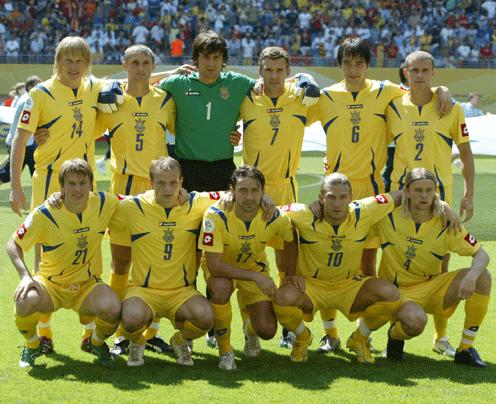

Головна | Всі команди | Група Н | Фінал
Наша зiркова збірна

Зліва направо:(стоять) Андрій Гусін, Володимир Єзерський, Олександр Шовковський, Андрій Шевченко, Андрій Русол, Андрій Несмачний (сидять) Руслан Ротань, Олег Гусєв, Владислав Ващук, Андрій Воронін, Анатолій Тимощук
Гравці Національної збірної
Воротар
| Прізвище, ім'я |
Дата
народження |
Зріст,
см |
Вага,
кг |
Клуб |
Ігри |
Голи |
| Олександр Шовковський |
02.01.1975 |
191 |
86 |
"Динамо" Київ |
76 |
0 |
Захисник
| Прізвище, ім'я |
Дата
народження |
Зріст,
см |
Вага,
кг |
Клуб |
Ігри |
Голи |
| Андрій Несмачний |
28.02.1979 |
182 |
72 |
"Динамо" Київ |
56 |
0 |
| Андрій Русол |
16.01.1983 |
188 |
80 |
"Дніпро" Дніпропетровськ |
32 |
3 |
| Володимир Єзерський |
15.11.1976 |
183 |
76 |
"Дніпро" Дніпропетровськ |
28 |
1 |
| В'ячеслав Свідерський |
01.01.1979 |
185 |
80 |
"Шахтар" Донецьк |
12 |
0 |
| Дмитро Чигринський |
07.11.1986 |
190 |
84 |
"Шахтар" Донецьк |
1 |
0 |
| Олександр Кучер |
22.10.1982 |
184 |
73 |
"Шахтар" Донецьк |
1 |
0 |
| Олександр Романчук |
21.10.1984 |
178 |
72 |
"Динамо" Київ |
1 |
0 |
Півзахисник
| Прізвище, ім'я |
Дата
народження |
Зріст,
см |
Вага,
кг |
Клуб |
Ігри |
Голи |
| Сергій Ребров |
03.06.1974 |
173 |
64 |
"Динамо" Київ |
75 |
15 |
| Анатолій Тимощук |
30.03.1979 |
183 |
74 |
"Шахтар" Донецьк |
65 |
1 |
| Олег Гусєв |
25.04.1983 |
180 |
73 |
"Динамо" Київ |
35 |
2 |
| Максим Калиниченко |
26.01.1979 |
176 |
67 |
"Спартак" М, Росія |
28 |
5 |
| Олег Шелаєв |
05.11.1976 |
181 |
74 |
"Дніпро" Дніпропетровськ |
28 |
0 |
| Руслан Ротань |
29.10.1981 |
176 |
69 |
"Динамо" Київ |
26 |
5 |
| Сергій Назаренко |
16.02.1980 |
176 |
69 |
"Дніпро" Дніпропетровськ |
17 |
3 |
| Євген Левченко |
02.01.1978 |
178 |
70 |
"Гронінген", Нідерланди |
2 |
0 |
| Тарас Михалик |
28.10.1983 |
185 |
78 |
"Динамо" Київ |
2 |
0 |
Нападаючий
| Прізвище, ім'я |
Дата
народження |
Зріст,
см |
Вага,
кг |
Клуб |
Ігри |
Голи |
| Андрій Шевченко |
29.09.1976 |
183 |
72 |
"Челсі" Лондон, Англія |
72 |
33 |
| Андрій Воробей |
29.11.1978 |
179 |
65 |
"Шахтар" Донецьк |
58 |
8 |
| Андрій Воронін |
21.07.1979 |
179 |
75 |
"Байєр" Л, Німеччина |
41 |
5 |
| Олексій Бєлік |
15.02.1981 |
185 |
74 |
"Шахтар" Донецьк |
18 |
5 |
| Артем Мілевський |
12.01.1985 |
189 |
83 |
"Динамо" Київ |
7 |
0 |
Головний тренер